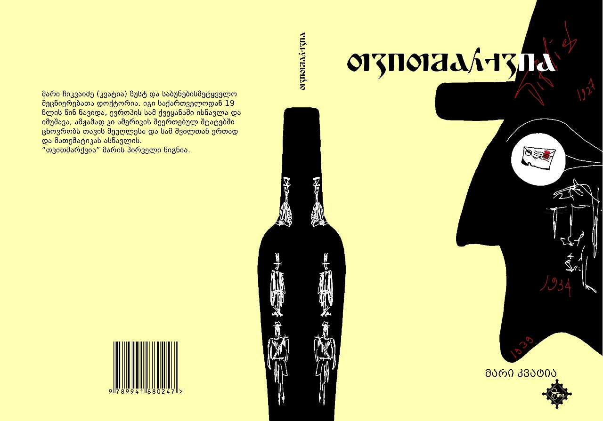
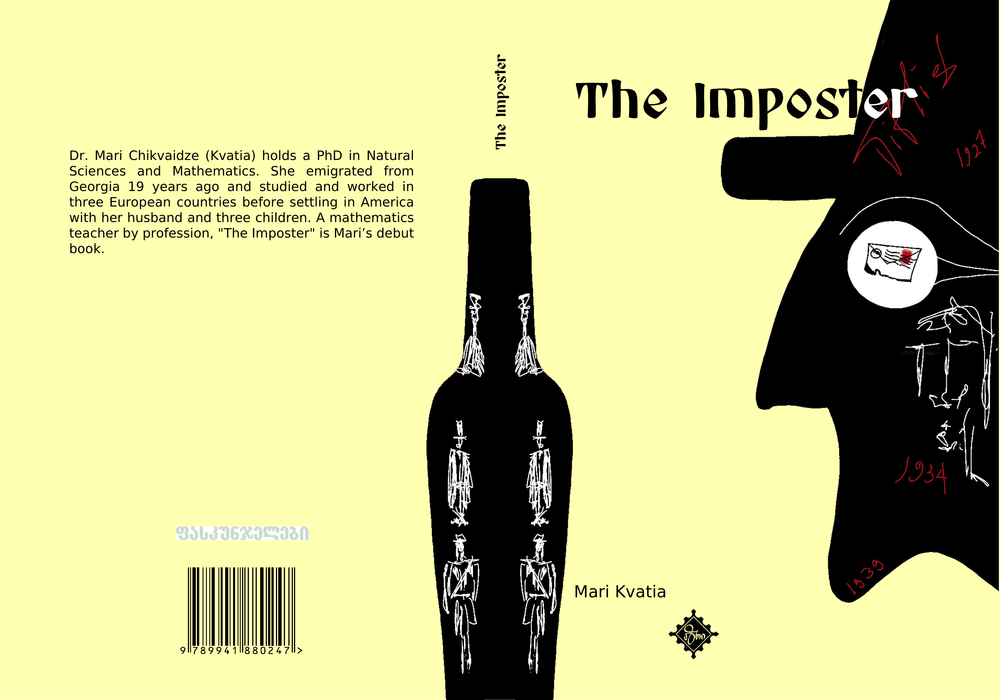
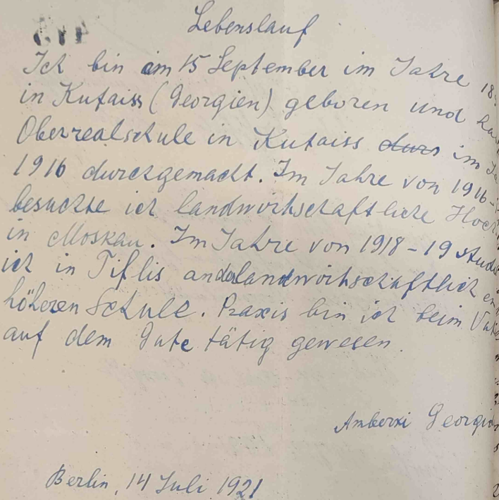
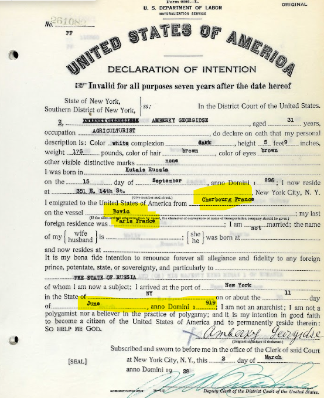
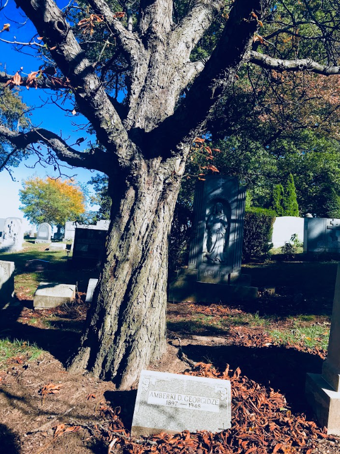
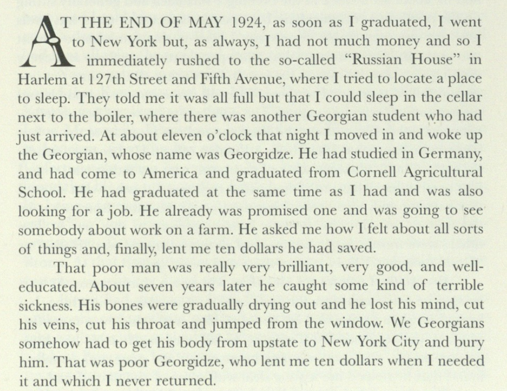

ჩემი სადებიუტო წიგნი - „თვითმარქვია“ - გამოიცა გამომცემლობა „აზრის“ მიერ.
თვითმარქვია
მარი კვატია
"თვითმარქვია" ოჯახური საგაა, რომელიც სპარსეთიდან, ანატოლიიდან, აღმოსავლეთ ევროპიდან და საქართველოს პატარა სოფლებიდან, ადამიანების დიდ ქალაქებში მიგრაციისა და ასიმილაციის შესახებ მოგვითხრობს. თითოეული პერსონაჟის მოგზაურობა მოწმობს ადამიანის შინაგანი სამყაროს ადაპტაციისა და სულიერი განვითარების შესაძლებლობაზე, თუნდაც საკუთარ თავში არსებული გამუდმებული და შეუპოვარი ეჭვის პირობებში. ტრიუმფებით თუ ფიასკოებით სავსე ეს ისტორიები გვახსენებს, რომ ადამიანისთვის იდენტობისა და მიმღებლობის ძიება უნივერსალურია და ხშირად სცდება გეოგრაფიულ საზღვრებს. ეს ძიება კიდევ უფრო მძაფრად წარმოაჩენს თაობათაშორის ტრავმებს, რომლებიც ამ თხზულების ყველა გმირს აერთიანებს.
რედაქტორი: კახა ჭაბაშვილი
გამომცემლობა: აზრი

My debut book - "The Imposter" - has been published by Azri.
The Imposter
Mari Kvatia
"The Imposter" is a family saga that chronicles the migration and assimilation of people from Persia, Anatolia, Eastern Europe, and small Georgian villages into large cities. The journey of each character testifies to the possibility of adapting the inner world and spiritual development, even under conditions of constant and persistent self-doubt. These stories, full of triumphs or fiascos, remind us that the human search for identity and acceptance is universal and often transcends geographical boundaries. This search even more vividly highlights the intergenerational traumas that unite all the characters of this work.
Editor: Kakha Chabashvili
Publisher: Azri

ISBN 978-9941-8-6674-6
Supporting Materials
დამხმარე მასალები
Below are additional materials related to the book "The Imposter".
ქვემოთ მოცემულია წიგნთან „თვითმარქვია“ დაკავშირებული დამატებითი მასალები.



